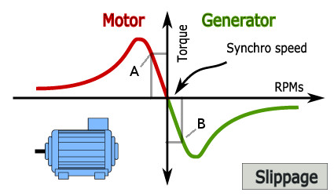

The Generator that is used in this type of Wind Turbine is in reality an Electric Induction Machine working as Generator. Induction Machines are widely use (i.e all washing machines has one, normally single phase), are very rugged, and with a very good price/performance ratio.
It can be thought of a transformer in which the secondary is allowed to rotate.
There are two generic classes:
•short-circuited rotor ( also known as Squirrel cage)
•wound-rotor: the windings of the rotor are accessible through brushes.
One important characteristic of an Induction Machine is its number of magnetic poles.
Induction Machines behave as motor or generator depending on their conditions.
Its most important characteristic is shown in the next figure, that presents the relation between the mechanical Torque in the axis of the Rotor versus its rotational Speed.

There is a speed at which the rotor that does not produce or nor oppose any torque: this is the synchronous speed. This is the speed the induction machine reach when connected to the Grid and there is no mechanical load nor torque applied to its Rotor.
It the rotor is at synchronous speed and we apply some friction in the rotor shaft (that is, a mechanical load), and there is no limitation on the power that can be drawn from the Grid, then a mechanical torque will appear and rotor speed will be reduced. This is the case of point A in the previous figure. In this case the Induction Machine acts as Motor. However, if the rotor shaft is mechanical connected it to another device capable of supplying power (eg power train of a wind turbine), then the operating point will be the point B in the figure above. In this case the Induction Machine will work as Generator.
Slippage is the other way to refer to the shaft speed. It is defined as the relationship between the shaft speed and the synchronous speed:
Slip = ( 1 - ShaftSpeed / SynchronousSpeed)
According to this definition we can have the following cases:
|
Slip = 1 |
The shaft is stopped |
|
Slip = 0 |
The shaft is at synchronous speed |
|
slip > 0 |
The machine is acting as Generator.Also known as "supersynchronous mode" |
|
Slip < 0 |
The machine is acting as Motor. Also known as "subsynchronous mode" |
The Dual Speed Active Stall Wind Turbine Simulator simulates a squirrel cage.
The next tables shows the characteristic values for one squirrel cage generator used in a Wind Turbine simulated by the Dual Speed Active Stall Wind Turbine Simulator.
The parameters are:
rpm: revolutions per second.
I: current in Amps (rms value)
P: active power (in KW)
Q: reactive power (in KVA)
S: total power (in KVA)
PowerFactor (Cos φ)
Torque: in N*m
The first table corresponds to the 4 poles connection with synchronous speed at 1500 rpms.
The second table corresponds to the connection with 6 magnetic poles (synchronous speed at 1000 rpms.)
These data are courtesy of ABB.